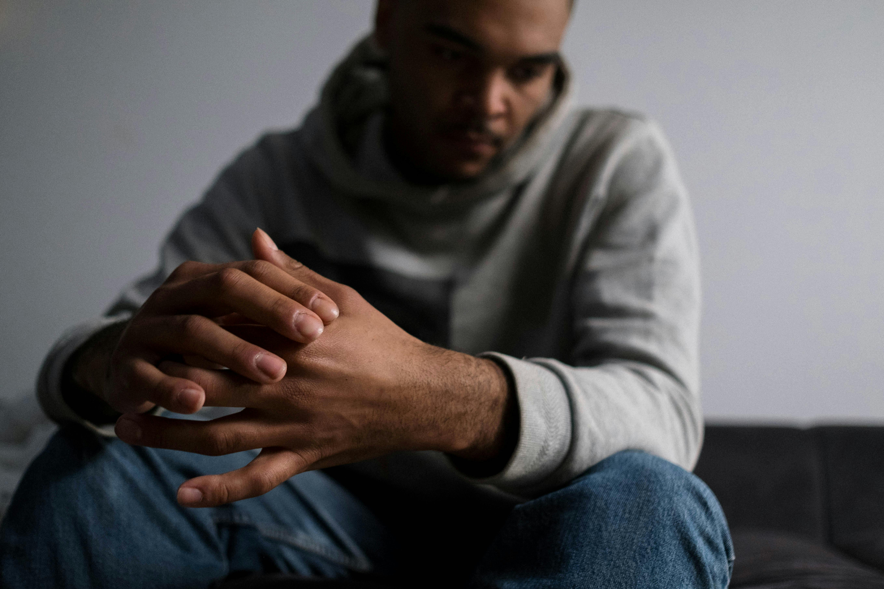
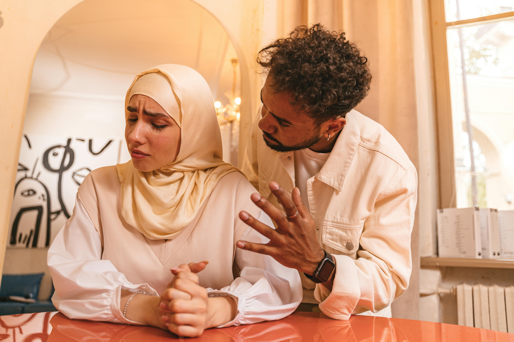

Jan 12, 2024 | Attia
Altaf
How Online Therapy Helps with Anxiety in Pakistan
Anxiety is one of the most common mental health issues in Pakistan, yet it often goes untreated due
to stigma and lack of awareness. Many people mistake heart palpitations or shortness of breath for
physical ailments, visiting GP after GP without relief.
The Stigma Barrier
In our society, "Log kya kahenge" (What will people say?) stops many from visiting a psychologist's
clinic. Online therapy removes this barrier completely. You don't have to sit in a waiting room or
worry about being seen.
Accessing Help from Home
Traffic in cities like Karachi or Lahore adds unnecessary stress. With online sessions, you can speak
to a professional from the comfort of your room. This immediate access to help can be crucial during
a panic attack or a high-stress period.
If you are struggling with anxiety, know that it is treatable. Check our Anxiety Counseling
services to learn more.

Jan 05, 2024 | Attia
Altaf
Signs of Burnout and How Pakistani Professionals Can Cope
The hustle culture in Pakistan's corporate sector is intense. Long hours, lack of work-life balance,
and economic pressure contribute to high rates of burnout among professionals.
Are You Burnt Out?
- - Chronic exhaustion that sleep doesn't fix.
- - Cynicism or detachment from your job.
- - Inefficacy or feeling like you can't accomplish anything.
Cultural Coping Mechanisms
Instead of just powering through with more chai, try to set boundaries. It is okay to say no to work
calls after 8 PM. Reconnect with your family without screens. Our Career Counseling can help you
navigate these workplace challenges.

Dec 28, 2023 | Attia
Altaf
Why Talking to a Therapist Strengthens Relationships
In Pakistan, joint family systems and marital expectations can create complex relationship dynamics.
Often, we vent to friends who might be biased, or we bottle things up to "keep the peace."
The Third-Party Perspective
A therapist provides a neutral, non-judgmental space. We don't take sides. We help you and your
partner (or family member) communicate effectively. We teach you to listen to understand, not just
to reply.
Seeking help isn't a sign of weakness; it's a sign that you value the relationship enough to work on
it. Consider our Couples Therapy options.